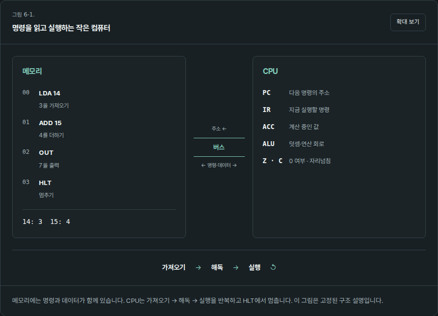
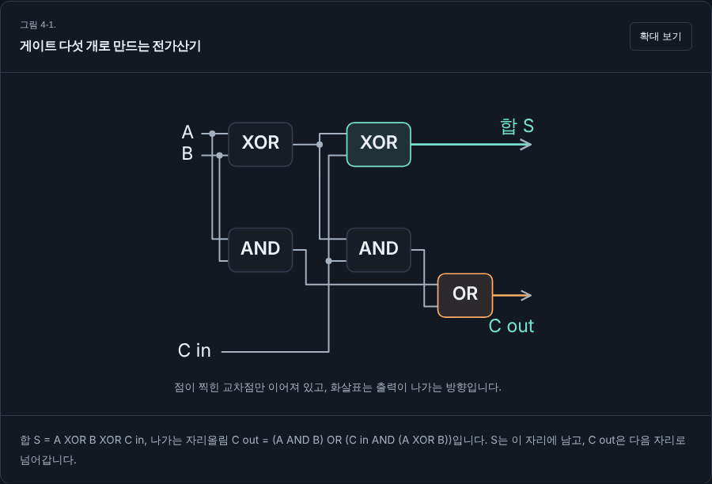
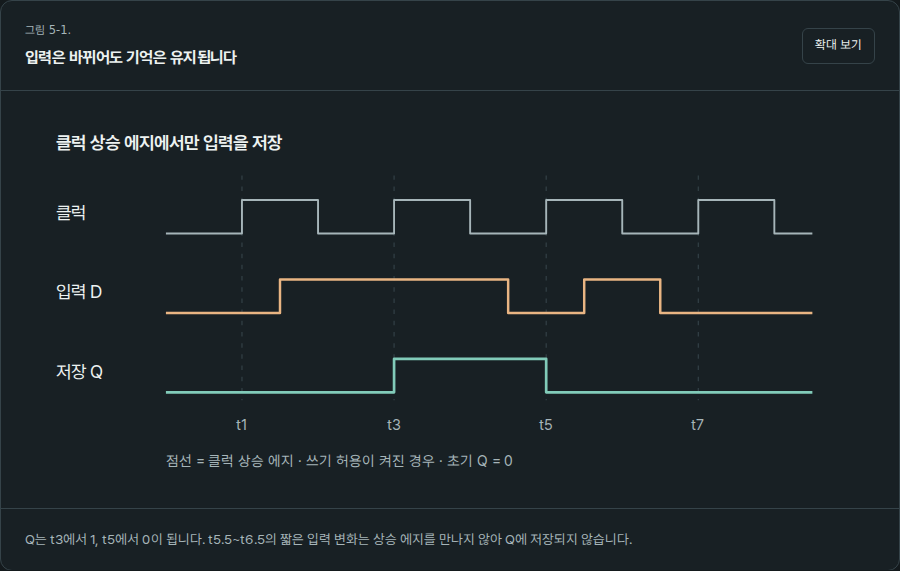
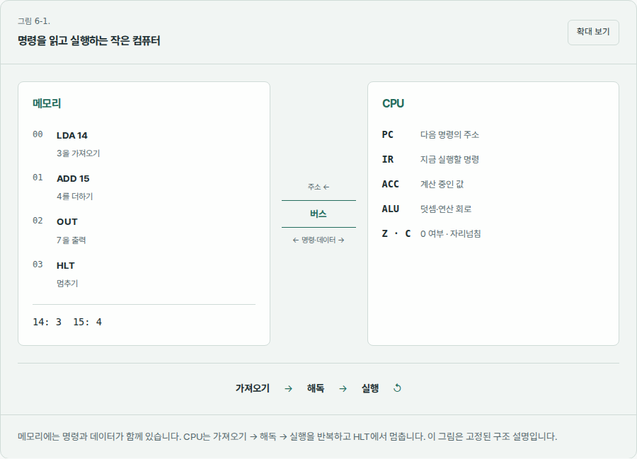
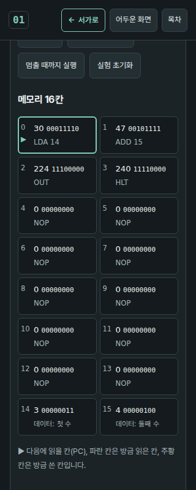

읽는 면과 실험하는 면을 함께 정리했습니다
2026-10-08 · 본문, 장 ID, 9개 실험과 계산 모델을 보존하고 컴퓨터 책의 표현 계층을 개편했습니다. 공통 머리말과 장 순서는 유지합니다.
독자에게 달라진 점
- 글꼴·줄 간격·읽기 폭·여백·테두리·강조색을 일관되게 적용했습니다. 제목, 설명, 결과를 시각적으로 구분합니다.
- 표지와 8개 장의 개념도를 다시 그렸습니다. CPU는 메모리·버스·레지스터의 관계로, 전가산기는 연결점과 합·자리올림 경로로, 클럭은 실제 시간 관계로 표현합니다.
- 도표를 밝은/어두운 테마에 맞췄습니다. 복잡한 SVG는 최소 폭을 확보한 내부 스크롤과 확대 대화상자를 제공해 글자가 줄어들지 않습니다. 단순 그림은 작은 화면에 맞춰 재배치됩니다.
- CPU 실험은 좁은 화면에서 메모리와 레지스터를 세로로 쌓습니다. 가산기는 가로 이동으로 자리 순서를 보존합니다.
- 확대 보기는 Esc로 닫고 원래 버튼으로 포커스를 돌려줍니다. 본문 바로가기는 현재 장을 유지하며, 장 이동 후 본문으로 포커스를 옮깁니다.



문제 해결 기록
| 문제 | 원인과 조치 |
|---|---|
| 테마와 동떨어진 삽화 | 고정 색 SVG와 밝은 그림판을 없애고 공통 색 변수로 통일했습니다. |
| 작은 화면에서 도표 글씨가 축소됨 | 복잡한 그림은 760px의 좌표 폭을 유지합니다. 본문 전체가 아닌 그림 안에서 이동하며 확대할 수 있습니다. |
| 가산기 순서가 두 줄로 나뉨 | 줄바꿈을 없애 오른쪽의 낮은 자리에서 왼쪽으로 이어지는 순서를 보존했습니다. |
| 클럭 그림의 의미 오류 | 기존 Q 상승이 클럭 상승과 일치하지 않았습니다. 시간축 데이터를 명시하고 상승 에지 저장·짧은 펄스 무시를 단위 검사합니다. |
| 본문 바로가기가 책 표지로 이동 | #main을 장 경로로 해석하던 동작을 바로잡아 해시를 바꾸지 않고 현재 본문에 포커스를 줍니다. |
| 초기 글꼴 교체 시 흔들림 | 자체 제공 글꼴을 먼저 읽고 초기 본문 높이를 확보했습니다. 같은 로컬 Lighthouse 검사에서 CLS 0.120 → 0.015로 감소했습니다. |
| 검증용 브라우저 다운로드 실패 | 기본 Playwright 브라우저 파일을 받지 못해 npm의 Chromium 바이너리로 실제 화면을 확인했습니다. 이 환경에는 표시 장치가 없어 headless 모드로 실행했습니다. |
검증 결과
| 범위 | 확인한 결과 |
|---|---|
| 계산·경로·시간 그림 | Node 단위 테스트 16개 통과. 계산 모델 파일은 변경하지 않았습니다. |
| 전체 화면 | 표지와 9개 장 × 320·390·768·1024·1440px × 두 테마, 총 100개 조합에서 가로 넘침·머리말 겹침 없음, 서가 버튼 표시와 그림 글씨 최소 크기 확인. |
| 9개 실험 | 8비트 넘침, 바이트 해석·범위 오류, XOR, 4비트 덧셈, 클럭 저장, CPU 출력 7, 곱셈 12·0, 캐시 75%·0%, 마지막 과제 44를 실제 조작해 확인. |
| 읽기 동작 | 그림 확대·Esc·포커스 복귀, 중복 SVG ID 없음, 모바일 목차·장 이동, 읽음 상태 유지, 테마 전환, 동작 줄이기, 본문 바로가기, 서가 복귀 통과. |
| 로컬 Lighthouse · CPU 장 | 성능 96 / 접근성 100 / 권장사항 100. 주요 콘텐츠가 표시되기까지 걸린 시간(LCP)은 약 2.55초, 화면 배치의 흔들림(CLS)은 약 0.015, 입력 처리를 막은 시간(TBT)은 20ms였습니다. 모바일 모의 제한을 적용한 개발 환경 수치이며 실제 방문자 성능을 뜻하지 않습니다. |
100개 화면 검사 결과 · Lighthouse 결과 요약
재실행 방법과 변경 경계
npm test --prefix books/computer
python3 scripts/validate.py
python3 scripts/build_catalog.py --check
# 저장소 루트에서 HTTP 서버 실행 후, Playwright가 있는 환경에서:
node books/computer/tests/browser.cjs
node books/computer/tests/reader-browser.cjs브라우저 경로는 BOOK_CHROMIUM, 추가 실행 옵션(JSON 배열)은 BOOK_BROWSER_ARGS, 대상 주소는 BOOK_TARGET, 화면 저장 폴더는 BOOK_SHOTS로 지정할 수 있습니다. 임시 브라우저 패키지는 책 실행 의존성이 아닙니다.
글꼴은 Pretendard 1.3.9의 현재 책 문자 부분집합을 파생한 Bookshelf Sans입니다. 원본의 예약 이름을 피하도록 내부 이름을 변경했고 SIL OFL 라이선스와 저작권 고지를 포함했습니다. 추가 문자는 시스템 한국어 글꼴로 대체되므로 새로운 원고를 많이 추가하면 부분집합을 다시 생성합니다. 책은 글꼴을 포함해 자체 자산만 사용합니다.
공개 반영 확인
56125df의 저장소 자동 검사와 Pages 배포가 모두 성공했습니다. 공개 주소에서 새 관계도, CPU의 출력 7, 확대 보기와 Esc 닫기, 390px 클럭 장을 실제 브라우저로 확인했습니다.
확인 범위의 한계
Safari·Firefox·실제 휴대폰·화면 낭독기·실제 독자의 학습 효과는 확인하지 않았습니다. 구조·조작·모형 검증과 학습 효과 검증을 구분합니다. 복잡한 회로는 휴대폰에서 도표 안의 가로 이동이 필요합니다. 기본 브라우저 확대를 방해하지 않습니다.

